Previous slide Next slide Toggle fullscreen Toggle overview view Open presenter view
Computer Vision for Materials Characterization
ORIE 7190 · AI for Science
Peter Frazier · Cornell ORIE
Outline
Characterization problems in materials science, and how computer science frames them
How a computer turns an image into numbers, and how to learn that without labels
Training on your own images: how many labels do you need?
Letting an LLM write the analysis code
Vision-language models
Reconstructing images that can't be measured directly
ORIE 7190 · AI for Science · Materials Characterization
Part 1: Characterization problems and how computer science frames them
ORIE 7190 · AI for Science · Materials Characterization
Characterization shoots a probe at a material and records what comes out
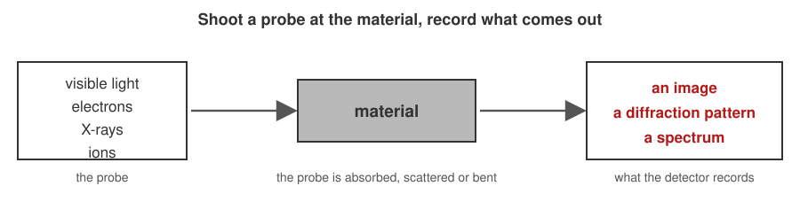
Characterization means measuring a material's structure and properties. The probe is absorbed, scattered or bent by the material, and the way it changes tells you what the material is like. Many instruments turn the result into an image, which is where computer vision comes in.
ORIE 7190 · AI for Science · Materials Characterization
A scanning electron microscope builds an image one beam position at a time
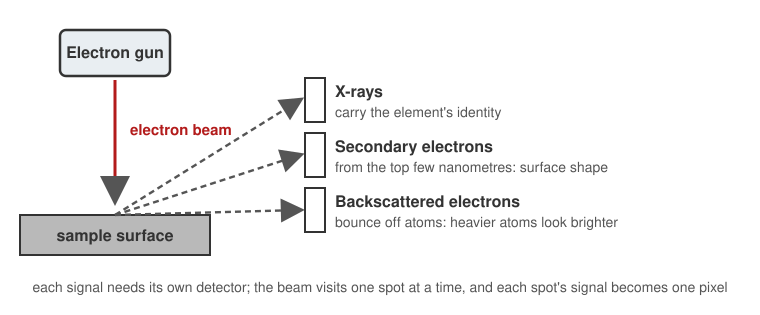
An SEM (scanning electron microscope) sends a beam of electrons at the sample surface. The beam moves across the sample in a grid. At each position a detector counts one kind of signal, and the count sets the brightness of one pixel.
ORIE 7190 · AI for Science · Materials Characterization
SEM images show surface shape at fine scale
Left: Dartmouth Electron Microscope Facility. Right: Erbe, Pooley, USDA. Both public domain.
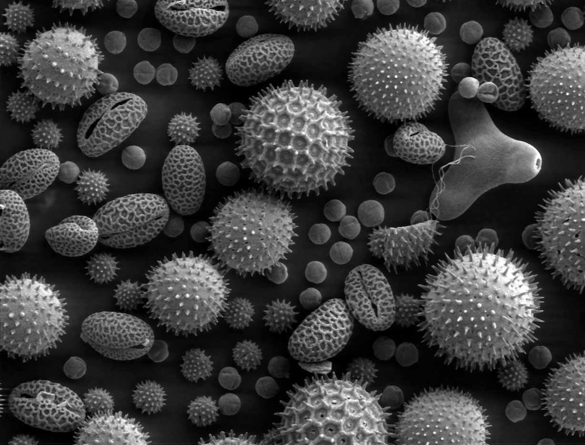
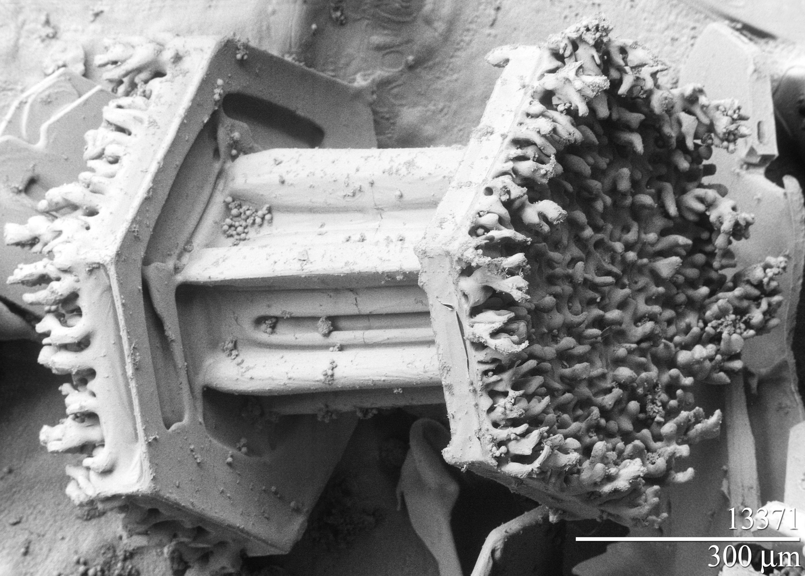
Left: pollen grains. Right: a snowflake imaged frozen. Brightness follows the sample's shape and composition, so the picture looks like a photograph of a 3D object.
ORIE 7190 · AI for Science · Materials Characterization
Other instruments probe with X-rays, electrons passing through, or a sharp tip
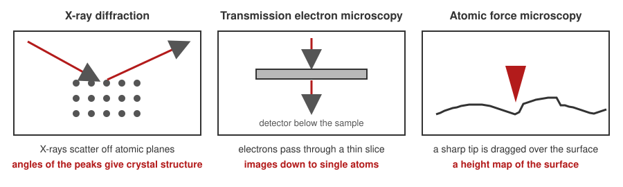
TEM (transmission electron microscopy) needs a sample thin enough for electrons to pass through. AFM (atomic force microscopy) feels the surface with a tip. X-ray diffraction gives a pattern of peaks, not a picture; later slides show instruments whose data a computation must turn into an image.
ORIE 7190 · AI for Science · Materials Characterization
Example image analysis jobs in electron microscopy
Jacobs. Deep learning object detection in materials science: current state and future directions . Computational Materials Science, 2022 · Holm et al. Overview: computer vision and machine learning for microstructural characterization and analysis . Metallurgical and Materials Transactions A, 2020
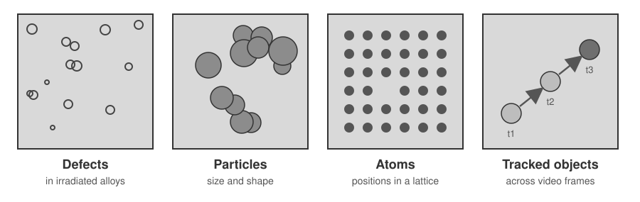
Modern microscopes acquire "multiple terabytes of data in a single session." Analysis by hand is error-prone, differs between experts, is slow, and does not scale. Jacobs reviews automated analysis of all four jobs; Holm et al. is the companion survey for microstructure images.
ORIE 7190 · AI for Science · Materials Characterization
Electron ptychography computes an image from diffraction patterns
Chen et al. Electron ptychography achieves atomic-resolution limits set by lattice vibrations . Science, 2021
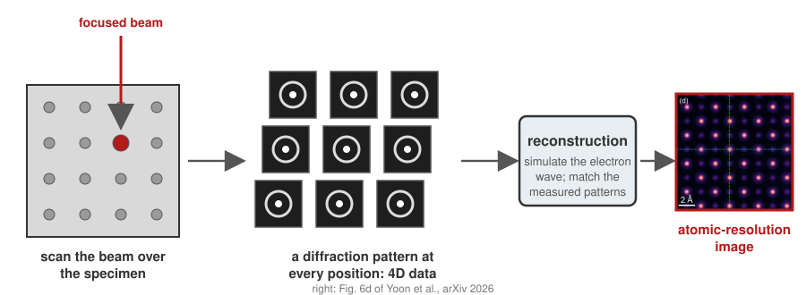
In 4D-STEM, a focused electron beam is scanned across the specimen and a 2D diffraction pattern is recorded at every position: a four-dimensional dataset, not a picture. Electron ptychography computes an atomic-resolution image from it, even resolving depth, by finding the specimen whose simulated patterns match the measured ones. This is an inverse problem, not image analysis.
ORIE 7190 · AI for Science · Materials Characterization
Wrong specimen settings blur a ptychographic reconstruction
Yoon et al. Scalable Bayesian optimization of composite functions for image-based inverse problems in materials characterization . arXiv, 2026 · Fig. 6
A simulated SrTiO₃ specimen, 200 Å thick, tilted by 3 and −5 milliradians. Left: the reconstruction ignores the tilt and the atoms smear. Right: it uses the thickness and tilt estimated by Bayesian optimization, and the atoms are sharp.
Mistilt is the angle between the beam and the crystal axis. Estimating these settings from the same data is itself an inverse problem (Part 6).
ORIE 7190 · AI for Science · Materials Characterization
Four vision tasks cover most image-analysis jobs
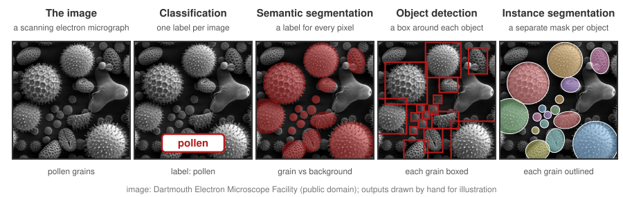
A mask is a yes/no image: 1 on an object's pixels, 0 elsewhere. Most pipelines later in this lecture end in instance segmentation: one mask per grain, particle, or cell, from which you compute the statistics.
ORIE 7190 · AI for Science · Materials Characterization
Inverse problems start from measurements
Some instruments never record a picture. They record indirect measurements, such as spatial frequencies in MRI or projections in cryo-EM, and a computation reconstructs the image. That is an inverse problem .
Computer vision does not usually solve it, because there is no image to start from. Most of this lecture is image analysis; inverse problems use a different set of techniques, and Part 6 returns to them.
ORIE 7190 · AI for Science · Materials Characterization
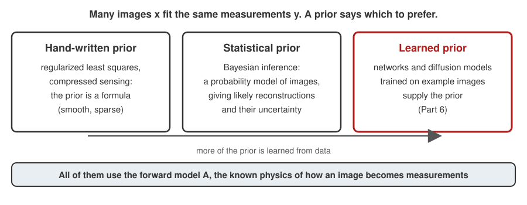
The toolkit comes from signal processing, applied mathematics and statistics, not from computer vision. Everything starts from the forward model A, the known physics of how an image x becomes the measurements y. Many images fit the same y, so each method adds a prior : a rule for which images to prefer.
ORIE 7190 · AI for Science · Materials Characterization
A pretrained network sorts steel micrographs
DeCost, Francis, Holm. Exploring the microstructure manifold: image texture representations applied to ultrahigh carbon steel microstructures . Acta Materialia, 2017
Task. Label each of 600 SEM micrographs of one steel (200 per class) by its main microstructure.
Network. VGG16, pretrained on ImageNet photos and never retrained, turns each micrograph into a vector; a linear SVM (a simple classifier) learns the labels.
Result. 98.9% correct in cross-validation (scored on held-out micrographs); hand-designed SIFT features reach 96.8%, within the run-to-run spread. The authors suspect the task is easy.
ORIE 7190 · AI for Science · Materials Characterization
A network tells two plastics apart from micrographs
Mukherjee et al. Liquid crystals as multifunctional interfaces for trapping and characterizing colloidal microplastics . Small, 2023 · Figs. 2-3 (arXiv)
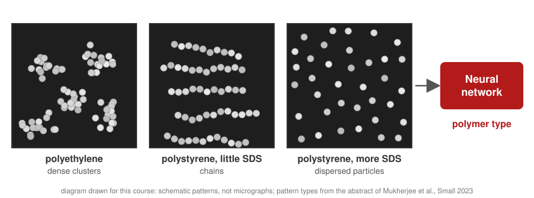
Particles at a liquid crystal–water interface form 2D patterns: polyethylene always forms dense clusters, while polystyrene goes from chains to dispersed particles as surfactant (SDS) increases.
From 846 patterns (355 polystyrene, 491 polyethylene), a VGG16 backbone pretrained on ImageNet plus a small trained classifier reached 99.88% accuracy. Hand-designed fractal features reached 82% at the lowest SDS, where the patterns overlap.
ORIE 7190 · AI for Science · Materials Characterization
A network labels each pixel of a steel micrograph
Azimi et al. Advanced steel microstructural classification by deep learning methods . Scientific Reports, 2018 · Fig. 6a
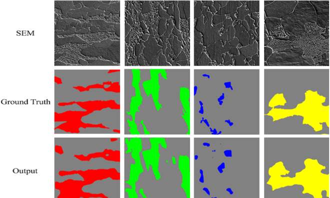
Rows: SEM image, expert labels, network output. Red martensite, green tempered martensite, blue bainite, yellow pearlite, grey ferrite background.
Task and data. Label every pixel of an SEM image of low-carbon steel by phase. Trained on 11 images, tested on 10, all from one lab, with labels drawn by metallurgists.
Network. A fully convolutional network (every layer is a convolution, so the output is a label map the size of the input), started from pretrained weights. Each grain takes the label most of its pixels vote for.
Result. 93.94% of 2,262 test grains correct, against 48.89% for the earlier method on the same data. Bainite pixels were only 37% correct.
ORIE 7190 · AI for Science · Materials Characterization
Object detection puts a box on each defect
Shen et al. Multi defect detection and analysis of electron microscopy images with deep learning . Computational Materials Science, 2021 · Fig. 3
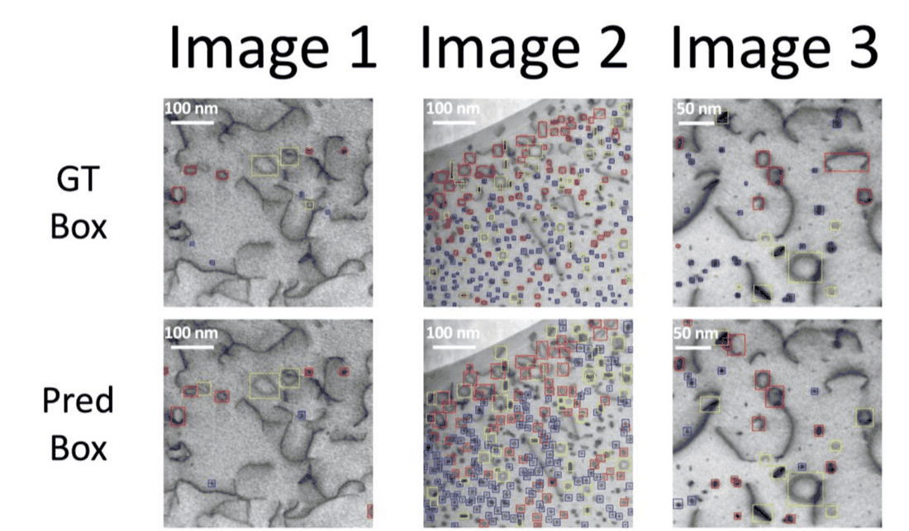
Top: boxes drawn by researchers. Bottom: boxes from the network. Box color is defect type.
Task and data. Find and box each defect in STEM images (scanning transmission electron microscope) of irradiated FeCrAl steel, and name its type: two kinds of dislocation loop or small "black dots". 165 images labeled by researchers; 12 held out for testing.
Network. Faster R-CNN, a standard detector that proposes candidate boxes and classifies each.
Result. F1 of 0.67 to 0.78 per defect type (F1 blends missed defects and wrong boxes; 1 is perfect), mean sizes within 10% of the human labels, 0.1 s per image against at least a minute by hand.
ORIE 7190 · AI for Science · Materials Characterization
Instance segmentation outlines each particle
Monchot et al. Deep learning based instance segmentation of titanium dioxide particles in the form of agglomerates in scanning electron microscopy . Nanomaterials, 2021 · Fig. 11
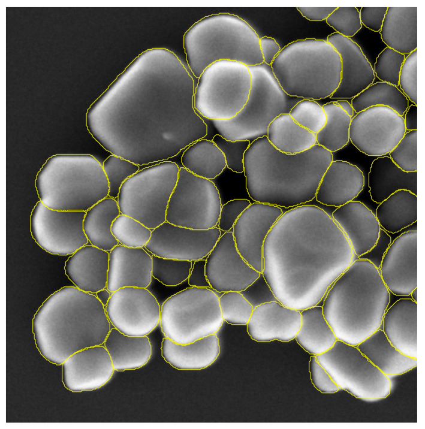
Yellow: the network's outlines.
Task. Outline every titanium dioxide particle in SEM images of clumps. 77 images (5,947 particles) outlined by trained operators, plus 622 synthetic; 19 test images.
Network. Mask R-CNN, a detector that also outputs one outline per object, started from weights pretrained on everyday photos (COCO).
Result. It finds 97% of particles that are not mostly hidden (84% of all); Dice 0.94 against human outlines (1 = identical).
ORIE 7190 · AI for Science · Materials Characterization
The same two kinds of problem recur across science
Pachitariu, Stringer 2022 · Zhong et al. 2021 · Zheng et al. 2025. Full citations later.
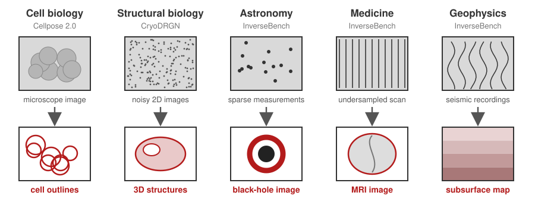
Top: what the instrument records. Bottom: what you want. The first column is image analysis (Parts 2-5). In the other four the picture does not exist until a computation builds it: an inverse problem (Part 6).
ORIE 7190 · AI for Science · Materials Characterization
Part 2: Backbones, a tutorial
ORIE 7190 · AI for Science · Materials Characterization
A backbone turns an image into a feature vector
A backbone is the large network that converts an image into a list of numbers (a "feature vector", or "embedding"). A small model on top of it (a "head") does your task: a label, a mask, a measurement.
Train it yourself on your own labeled images: needs many labels.Pretrain once, reuse often: someone trains the backbone on a huge image collection; you train only the head.
ORIE 7190 · AI for Science · Materials Characterization
An image is a grid of numbers
Image: MNIST test set (LeCun, Cortes, Burges), handwritten digits.
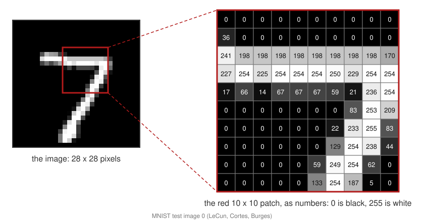
A grayscale image stores one number per pixel, from 0 (black) to 255 (white). A color image stores three, for red, green and blue.
ORIE 7190 · AI for Science · Materials Characterization
A convolution slides one small filter across the image
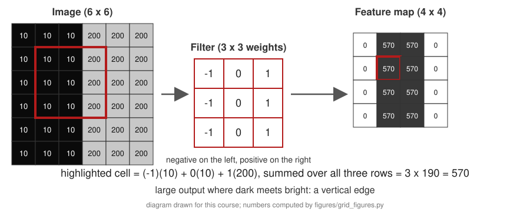
Multiply the nine pixels under the filter by its nine weights and add: that is one output. Slide the filter one pixel and repeat. The outputs form a feature map .
This filter gives a large output where dark meets bright on its right: it detects vertical edges. Training learns the weights; here they are set by hand. The same nine weights are reused at every position, and a layer uses many filters at once.
ORIE 7190 · AI for Science · Materials Characterization
Pooling shrinks a feature map
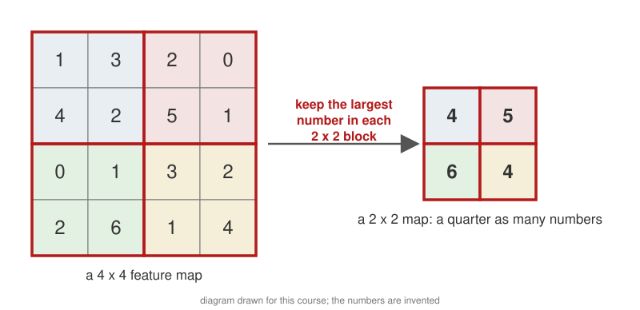
Pooling keeps the largest number in each 2×2 block. The map shrinks to a quarter of its size, so a filter applied to the pooled map covers a larger part of the original image. The strongest response in each block survives; its exact position inside the block is dropped.
ORIE 7190 · AI for Science · Materials Characterization
A CNN stacks convolution and pooling, then a head
LeCun et al. Gradient-based learning applied to document recognition . Proc. IEEE, 1998 · Zeiler, Fergus. Visualizing and understanding convolutional networks . arXiv, 2013
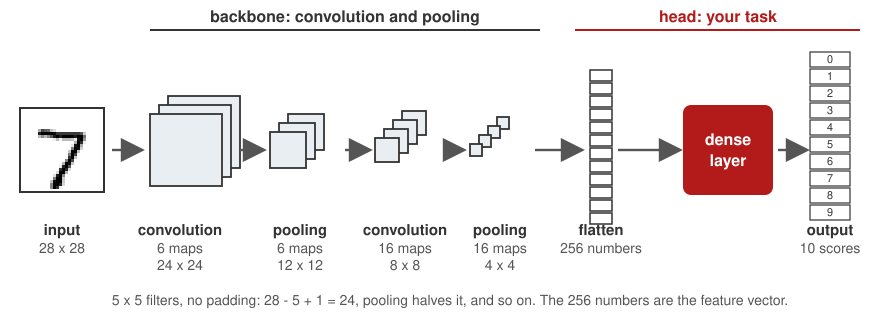
A convolutional neural network (CNN) repeats convolution and pooling. A layer has several filters (6, then 16 here), each giving one map. "Flatten" lays the last maps out as one list, the feature vector, and a dense layer (every input connected to every output) turns it into 10 scores. Training adjusts all the weights so the right digit scores highest.
Zeiler and Fergus: in a trained network, layer 2 responds to corners and edges, layer 3 to textures.
ORIE 7190 · AI for Science · Materials Characterization
A ViT turns an image into a sequence of vectors
Dosovitskiy et al. An image is worth 16×16 words . ICLR 2021
A vision transformer (ViT) applies the language-model transformer to images, treating patches like words.
Cut the image into square patches (16×16 pixels; a 224×224 image gives 196).
Flatten each patch into a list of numbers (16×16×3 = 768).
Multiply by one shared learned matrix, the linear projection : a vector of length D.
Add a position vector (attention ignores order otherwise) and put a learned [class] vector in front: 197 vectors, called tokens .
ORIE 7190 · AI for Science · Materials Characterization
The encoder mixes the vectors with attention, then refines each one
Dosovitskiy et al. ICLR 2021 · Vaswani et al. Attention is all you need . NeurIPS 2017
Self-attention: each vector becomes a weighted average of all the vectors (weights from how similar each pair is): patches exchange information here. "Multi-head": several run side by side.MLP: a small two-layer network applied to each vector alone.Residual connection: add the block's input to its output, so a block adjusts the vectors instead of replacing them.
ORIE 7190 · AI for Science · Materials Characterization
The output vectors feed a small head: one label per image, or one per patch
Dosovitskiy et al. An image is worth 16×16 words . ICLR 2021
The [class] vector summarizes the whole image, and the paper attaches its classification head to it. The patch vectors keep one summary per location, which suits segmentation. The head is a small network of your choice; the encoder is the backbone.
ORIE 7190 · AI for Science · Materials Characterization
ViTs come in three sizes and need large pretraining sets
Dosovitskiy et al. An image is worth 16×16 words . ICLR 2021
Model
Layers
D
Heads
Parameters
ViT-Base
12
768
12
86M
ViT-Large
24
1024
16
307M
ViT-Huge
32
1280
16
632M
D is the vector length; layers are encoder blocks; heads are attention copies run side by side; parameters are trainable weights. Pretrained on ImageNet alone, ViTs lose to ResNet-style CNNs; at 14 to 300 million images they match or beat them.
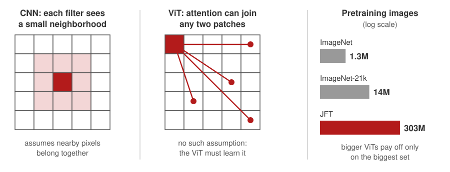
ORIE 7190 · AI for Science · Materials Characterization
Supervised pretraining reuses learned features
Russakovsky et al. ImageNet Large Scale Visual Recognition Challenge . arXiv, 2014
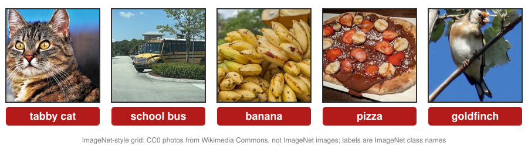
Supervised means a person labeled every training photo. ImageNet has about 14 million labeled photos; its standard subset has 1,000 categories and 1.2 million training photos. The recipe:
Train a convolutional network to name the object in each photo.
Remove its last layer, the part that outputs category names.
Keep the rest as your backbone; optionally keep training it on your images ("fine-tuning"). It works because edges and textures help in any image, so the early layers transfer.
The limit: photos of cats and cars look little like micrographs. MicroNet beat ImageNet pretraining using over 100,000 labeled micrographs.
ORIE 7190 · AI for Science · Materials Characterization
Self-supervised learning makes labels from the images
A language model is trained to predict the next word of raw text, so the text supplies its own labels. Self-supervised learning does the same for images: hide or alter part of an image, then ask the network to recover it or to match it.
Three recipes follow:
Masked autoencoder: hide patches and fill them in.Contrastive learning (SimCLR): two altered views of one image should match.Self-distillation (DINO): a student network learns to match a slowly updated copy of itself.
ORIE 7190 · AI for Science · Materials Characterization
Recipe 1: hide most of the image and predict it
He et al. Masked autoencoders are scalable vision learners . CVPR 2022
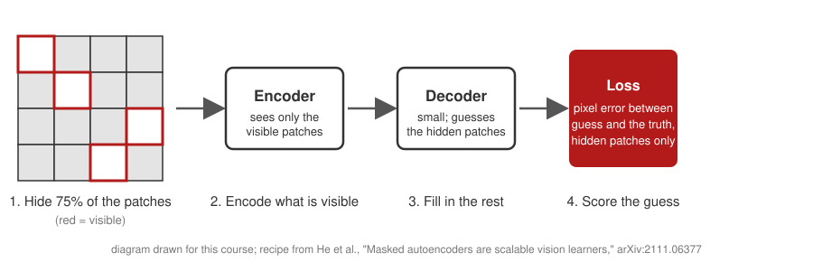
Hide 75% of the patches. The encoder is the ViT of the last slides, run on the visible 25% only. The decoder is a lightweight network that takes the encoder's vectors plus a blank placeholder for each hidden patch and outputs pixel values. The loss is the squared pixel error on the hidden patches only. To guess a hidden patch the network has to know what grains and boundaries look like, so the encoder learns that. After training, keep the encoder and discard the decoder: it only learned to paint.
ORIE 7190 · AI for Science · Materials Characterization
Recipe 2: pull two views together, push other images apart
Chen et al. A simple framework for contrastive learning of visual representations (SimCLR). ICML 2020
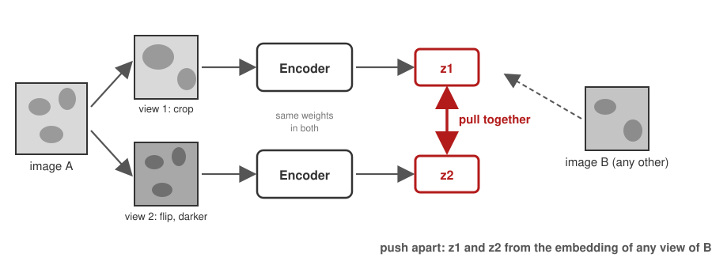
Two random alterations of each image (augmentations : crop, flip, brightness shift; each is a "view") go through the same encoder. Training makes the two embeddings of one image close, and the embeddings of views of different images in the batch (the images processed together in one training step) far apart.
ORIE 7190 · AI for Science · Materials Characterization
The contrastive loss picks out an image's partner
views of one image (two random alterations: crop, flip, brightness shift). The sum runs over all other views in the batch.cosine similarity , based on the angle between two vectors: 1 for the same direction, 0 perpendicular, -1 opposite.The fraction is a softmax : scores become probabilities summing to 1; the loss is small when the partner's is near 1.
ORIE 7190 · AI for Science · Materials Characterization
Recipe 3: a student matches a slowly updated copy of itself
Caron et al. Emerging properties in self-supervised vision transformers (DINO). ICCV 2021
Both networks end in a softmax over K slots, giving a probability vector; the student is trained to match the teacher's.
The teacher sees two large crops; the student also sees small ones, so it predicts the whole from a part.
The teacher is not trained: its weights are a slow moving average of the student's. Centering (subtract a running mean) and sharpening (a low softmax temperature) of its output prevent collapse to one constant answer.
ORIE 7190 · AI for Science · Materials Characterization
DINOv2 trains a general backbone on curated, unlabeled images
Oquab et al. DINOv2: Learning robust visual features without supervision . TMLR 2024
Oquab et al. build the image set (LVD-142M) by retrieving, from 1.2 billion web images, those close to images in curated datasets; no labels or text are used. They train a 1-billion-weight transformer on it without labels, then distill it into smaller models ("distill": train a small network to copy the big one's outputs). The smaller models outperform OpenCLIP, a strong image-caption model, on most benchmarks. The result is a backbone you download and use frozen (weights never changed).
ORIE 7190 · AI for Science · Materials Characterization
On micrographs, self-supervised features help with caveats
Docherty et al. 2024 · Ahmed et al. 2026 · Pawlowsky et al. 2026 (arXiv preprints)
Docherty et al. DINOv2 gives one vector per 14×14-pixel patch, too coarse for a boundary; they average features over slightly shifted images to get one per pixel, then train a classifier on pixels a user painted.
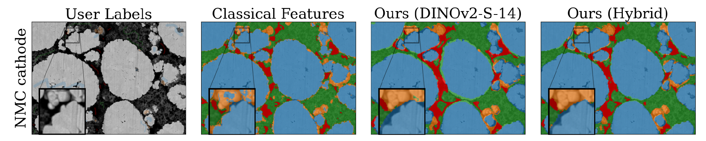
Fig. 6 (crop), Docherty et al. Colors are classes the user labeled.
Ahmed et al. pretrain a masked-autoencoder transformer on 125,000 unlabeled SEM images; one use is sharpening defocused images (blur simulated on sharp ones).Pawlowsky et al. DINOv2's patch vectors partly encode where in the image a patch sits, which misleads segmentation of homogeneous microstructure; ALiBi plus fine-tuning reduces it.
ORIE 7190 · AI for Science · Materials Characterization
Augmentations tell the model what to ignore
Contrastive and self-distillation training make the embedding the same under every augmentation. Each augmentation is therefore a claim that the change does not matter.
Fine for a polycrystal with no preferred direction; not for a textured or layered material whose orientation matters.
ORIE 7190 · AI for Science · Materials Characterization
Using a backbone: freeze it, embed your images, train a head
Chen et al. 2020 (SimCLR) · Caron et al. 2021 (DINO)
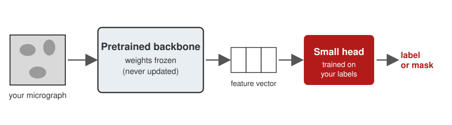
Run every image through the backbone once and save the vectors.
Fit logistic regression on the vectors (a linear probe ), or label a new image like its closest saved vectors (nearest neighbours ).
For masks, take one vector per patch and train a head that labels each patch.
With more labels, also update the backbone's weights ("fine-tuning").
On ImageNet, a linear probe on SimCLR features reaches 76.5% top-1 accuracy (the share of images whose single best guess is right), matching a supervised ResNet-50; DINO features reach 78.3% with nearest neighbours.
ORIE 7190 · AI for Science · Materials Characterization
SAM is a promptable segmenter on a ViT encoder
Kirillov et al. Segment Anything . ICCV 2023 · Archit et al. Segment Anything for microscopy (µSAM). Nature Methods 2025
A prompt is a hint: a click, a box, or a rough mask. SAM takes an image plus a prompt and returns a mask.
The encoder is the large, slow part; the prompt encoder and mask decoder are small, so each new click is fast.
SAM was trained with a data engine : people corrected its masks, then it proposed masks for people to complete, then it generated masks alone (1.1 billion masks, 99.1% automatic). µSAM fine-tunes SAM on microscopy images and adds it to napari, an image viewer.
ORIE 7190 · AI for Science · Materials Characterization
Part 3: Pipelines built from your own data
ORIE 7190 · AI for Science · Materials Characterization
Four ways to adapt a general model to your images
Every row trades labels for generality. The next slides give the evidence for the rows with numbers, then the cases where each row breaks.
ORIE 7190 · AI for Science · Materials Characterization
Cellpose 2.0 needs 100-200 annotated outlines
Pachitariu, Stringer. Cellpose 2.0: how to train your own model . Nature Methods, 2022 · Fig. 4
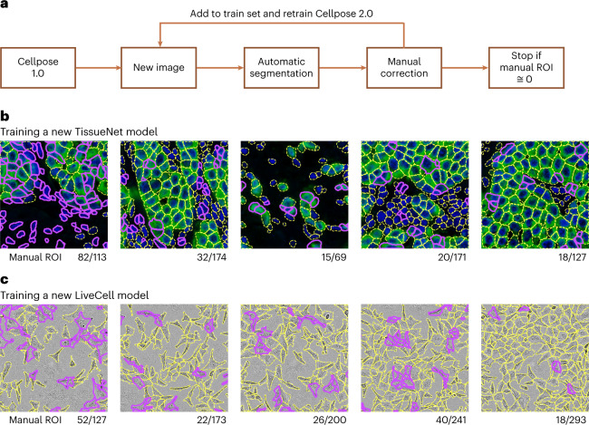
Yellow: the model's correct outlines. Purple: outlines the person added.
Method. For every pixel, the network predicts an arrow toward its cell's center and the chance it is inside a cell; pixels that follow the arrows to one point form a cell. Cellpose 2.0 starts from a model pretrained on many cell types; a person corrects its output and it retrains ("human-in-the-loop", panel a).
Numbers. 500-1,000 annotated cell outlines nearly match training on up to 200,000; human-in-the-loop needs 100-200 (1-2 hours).
To press on. All data are biological cells; does this transfer to grain maps?
ORIE 7190 · AI for Science · Materials Characterization
Pretraining on micrographs beats ImageNet pretraining
Stuckner et al. Microstructure segmentation with deep learning encoders pre-trained on a large microscopy dataset . npj Computational Materials, 2022
Method. Pretrain encoders (the half of a segmentation network that turns the image into features) to classify MicroNet, over 100,000 labeled micrographs from 54 classes, then copy them into a segmentation network.
Result. With one Ni-superalloy training image, the best MicroNet model scored 93.0% IoU (overlap of predicted and true mask; 1 is perfect) against 74.8% for ImageNet: the error fell 72.2%. One alloy only.
ORIE 7190 · AI for Science · Materials Characterization
Zero-shot SAM gets grain statistics but needs checking
MatSAM (Li et al., arXiv 2024, preprint; Fig. 1c)
Zero-shot : no training on your images. A rough pass (Canny or Otsu) finds grains or phases; MatSAM puts a SAM point on each center, adds grid points where it missed things, and keeps the best masks. On 16 datasets it improves on the rule-based methods it starts from.
Seagate grains (Nichols et al., CVPR 2024 workshop)
Default SAM on 5 SEM images of one gold film, scored against 783 grains traced by one annotator: promising grain statistics, but small grains and low-contrast boundaries are missed.
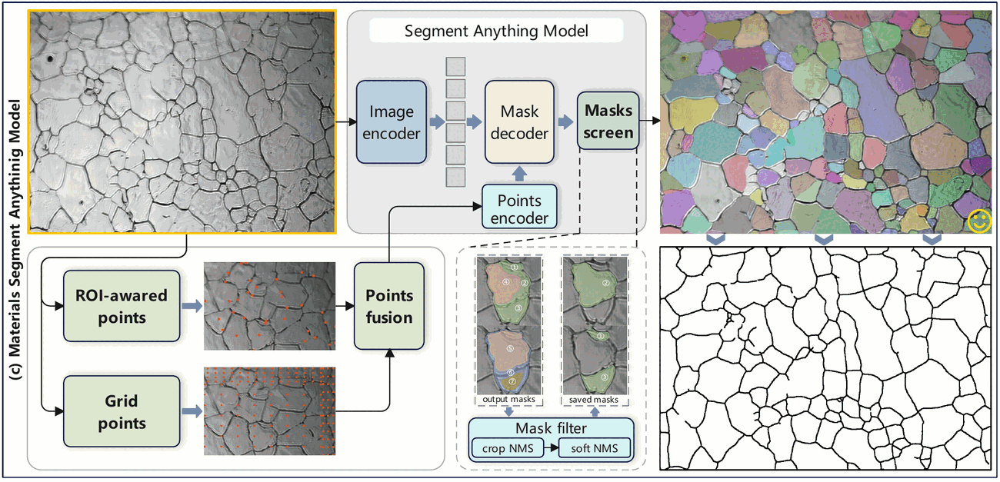
Fig. 1c: MatSAM places point prompts, screens SAM's masks, outputs a grain map. Seagate: one wafer, one annotator.
ORIE 7190 · AI for Science · Materials Characterization
Models trained on one dataset degrade on another
DaCosta, Scott. arXiv 2025, Fig. 3a · Fuster-Barceló, Uhlmann. arXiv 2026, Fig. 2 (preprints)
HRTEM, synthetic data. Over 12,000 networks segmented nanoparticles in simulated images. Accuracy worsens "smoothly and predictably" as conditions drift; defocus changes the contrast transfer function (how the lenses pass fine detail). One nanoparticle at three defocus settings:
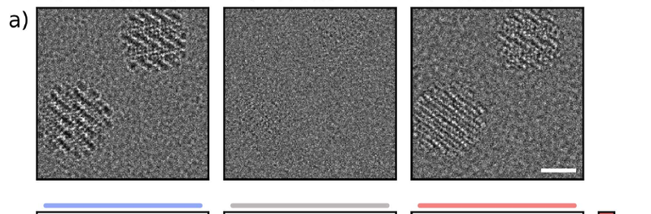
EM, real data. DINOv2, DINOv3 and OpenCLIP segment mitochondria well fine-tuned on one dataset, and fail on two together (bars: overlap with true outlines, 100 = perfect):
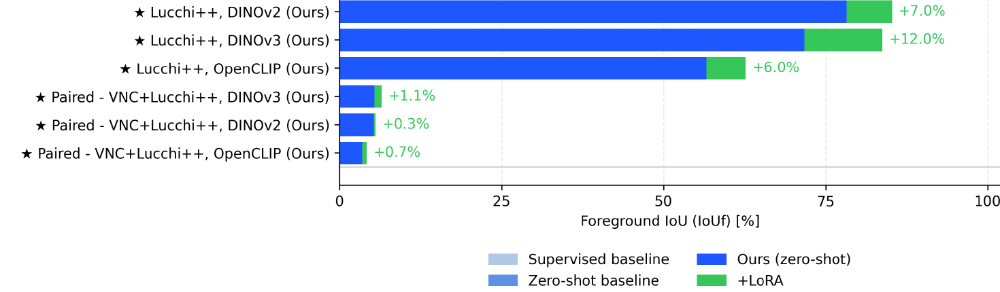
Neither paper tests real materials micrographs; no independent benchmark of SAM, µSAM or Cellpose-SAM on them turned up.
ORIE 7190 · AI for Science · Materials Characterization
Part 4: Programs and agents
ORIE 7190 · AI for Science · Materials Characterization
ViperGPT has an LLM write the analysis as Python
Surís et al. ViperGPT: Visual inference via Python execution for reasoning . ICCV 2023 · Gupta, Kembhavi. Visual programming (VisProg). CVPR 2023
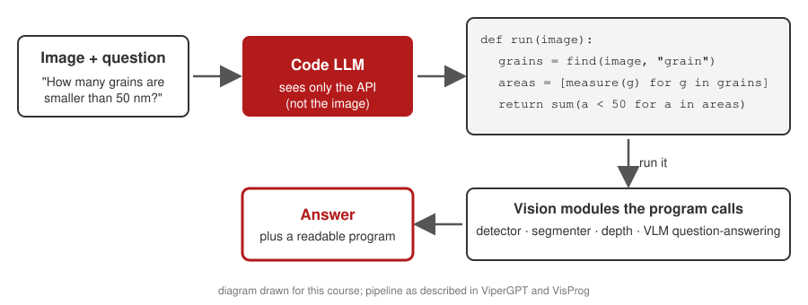
The LLM never sees the image. It sees an API , a list of functions it may call with one line describing each, and writes a short program. Running the program calls vision models (a detector, a segmenter) on the image. Nothing is trained. VisProg is the same idea with a fixed set of modules.
ORIE 7190 · AI for Science · Materials Characterization
On 3D questions, GPT-4o alone beats the program writers
Marsili et al. Visual agentic AI for spatial reasoning with a dynamic API (VADAR). CVPR 2025
VADAR has language models write new Python helper functions for each kind of 3D question, then runs them on a detector and a depth estimator. Omni3D-Bench asks about sizes and distances in photos.
With perfect (oracle) vision modules on a 50-query subset, VADAR reaches 94.4%; GPT-4o, with no oracle, gets 53.7%. With real modules on all 500 questions it scores 40.4% against GPT-4o's 42.9%. Perception is the bottleneck.
ORIE 7190 · AI for Science · Materials Characterization
Without hand-picked modules, ViperGPT's gain shrinks
Khandelwal et al. Analyzing modular approaches for visual question decomposition . EMNLP 2023
Test. On GQA, a question-answering benchmark on photos, ViperGPT beats BLIP-2 (one network that reads the image and question and answers directly, "end-to-end") by 6.2 points when its modules are hand-picked for the benchmark. Given all modules instead, the gain is 2.1 points. With BLIP-2 as its only tool, ViperGPT keeps 95% of its direct-answer score.
Implication. Most of the benefit came from the hand-picked module list. For your own pipeline, the module list is part of the method.
ORIE 7190 · AI for Science · Materials Characterization
Chen, Yuan, You. Bridging electron microscopy and materials analysis with an autonomous agentic platform (EMSeek). Science Advances, 2026
Reported. On the authors' benchmark of 20 material systems and five tasks, the segmentation network runs about twice as fast as SAM 2 on one GPU (259 versus 560 billion operations), with higher accuracy. A query takes 2-5 minutes per image, which the authors call about 50 times faster than expert workflows.
To press on. The LLM calls fixed tools. We found no paper where an LLM writes a segmentation pipeline from your own example micrographs.
ORIE 7190 · AI for Science · Materials Characterization
One agent's repeat runs differ more than agents do
Pan et al. BIABench: Evaluating AI agents on real-world bioimage analysis tasks . arXiv, Sept 2026 (preprint) · Fig. 3b
16 tasks from published biological studies. Each run gets an outcome score from 0 to 1 (its files compared with ground truth) and a process score (a VLM, a model that reads images and text, checks its saved code against an expert rubric).
Routine 2D tasks are solved well; on some 3D and time-series tasks no agent scored above 0.19.
The same agent moved by more than 0.2 between identical runs in 40% of pairs.
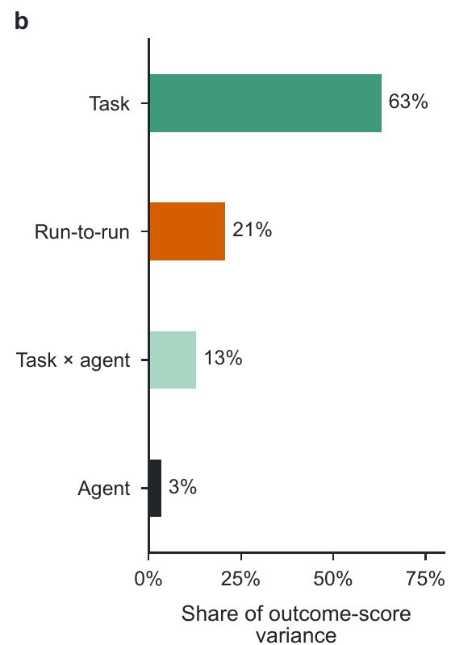
Share of score variation by factor ("agent" = harness; six, one model).
ORIE 7190 · AI for Science · Materials Characterization
Part 5: Vision-language models
ORIE 7190 · AI for Science · Materials Characterization
A VLM feeds image tokens and text tokens to one language model
Radford et al. CLIP . ICML 2021 · Liu et al. Visual instruction tuning (LLaVA). NeurIPS 2023
A token is one input unit of a language model, turned into a vector.
The image encoder (a ViT) gives one vector per patch. The projector , a small learned layer, maps them into the word vectors' space, so the language model reads image and word vectors as one sequence and writes text.
The encoder is usually CLIP, trained on 400 million image-caption pairs. In LLaVA it stays frozen; the projector and language model are trained.
ORIE 7190 · AI for Science · Materials Characterization
VLMs read equipment well but score about 53% on microscopy
MaCBench (Alampara et al., Nature Computational Science, 2025)
Chemistry and materials tasks: data extraction, experimental understanding, interpreting results. In the arXiv version, models average 0.77 on naming lab equipment but 0.24 on interpreting AFM images.
MicroVQA (Burgess et al., CVPR 2025)
1,042 multiple-choice questions written by biology experts; guessing scores about 22%. The best model reaches about 53%. Experts reviewing the models' written reasoning found perception errors 50%, knowledge errors 30%, overgeneralization 13%.
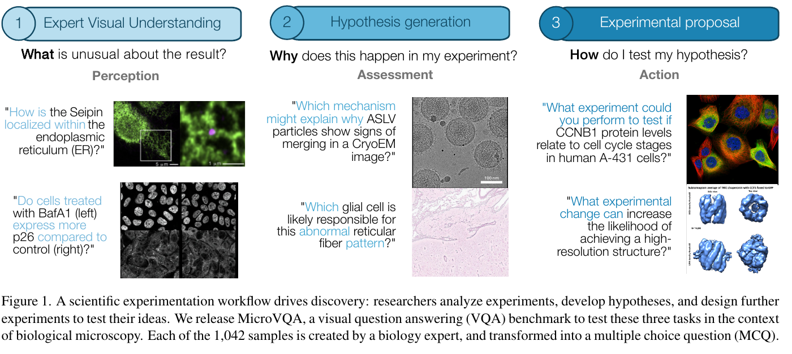
Image: MicroVQA, Fig. 1. Its images are biological microscopy.
ORIE 7190 · AI for Science · Materials Characterization
Two frontier models answer 44% of MicroVQA blind
Asadi et al. MIRAGE: The illusion of visual understanding . arXiv, 2026 (preprint)
With the image deleted from each of the 1,042 MicroVQA questions, GPT-5.1, Gemini-2.5-Pro and Gemini-3-Pro still answered 456, 468 and 335 correctly. The filter B-Clean keeps the 240 questions none could answer blind; GPT-5.1 falls from 61.5% to 15.4% on them, and model rankings change.
A high score on a scientific VQA benchmark can mean the model read the question, not the image. No comparable audit of MaCBench turned up.
ORIE 7190 · AI for Science · Materials Characterization
Four VLMs average 58% on simple shape tasks
Rahmanzadehgervi et al. Vision language models are blind . ACCV 2024 (numbers and probes from arXiv v6, 2025) · Fig. 1
BlindTest has seven low-level tasks, such as do two circles overlap or how many times do two lines cross. Four models average 58.07%; the best (Claude 3.5 Sonnet) reaches 77.84%, and the paper expects humans to score 100% (no human study is reported). In v6, linear probes on the vision encoders recover the answer, so the language model fails to read out what the image tokens hold. These are 2024 models on drawn shapes, not micrographs.
ORIE 7190 · AI for Science · Materials Characterization
A VLM proposes points; a segmenter measures
Mohinta, Cardona. Adapting open-weight MLLMs to generate point prompts for electron microscopy segmentation . ECCV 2026 workshop
A VLM (Qwen3-VL) fine-tuned with LoRA ("small adapter weights") writes point prompts for a frozen µSAM on mitochondria in EM. No person clicks.
Prompt source
AP50
Qwen3-VL, no adaptation
0.247
Qwen3-VL, adapted
0.736
Automatic prompt generation
0.773
Supervised centroid detector
0.904
AP50 : a detection score from 0 to 1; a mask counts as right if it overlaps the true one by at least half. "Automatic prompt generation" is µSAM's built-in point generator; the detector is a small U-Net trained on labels to find each mitochondrion's center. It still wins; the VLM's draw is that the request is in plain language.
ORIE 7190 · AI for Science · Materials Characterization
Part 6: Inverse problems
ORIE 7190 · AI for Science · Materials Characterization
An inverse problem runs the instrument backwards
The instrument records y = A(x) + noise. A, the forward model , is known physics: an MRI scanner samples only some of the image's spatial frequencies. You want x, and many x fit y. A prior is a rule for which x to prefer. A diffusion prior is a diffusion model (an image generator trained on images from the field) used as that rule. Plug-and-play means the same prior is reused with any forward model. An end-to-end network is trained to map y straight to x for one A.
ORIE 7190 · AI for Science · Materials Characterization
Diffusion priors survive a changed forward model
Zheng et al. InverseBench: Benchmarking plug-and-play diffusion priors for inverse problems in physical sciences . ICLR 2025
Five problems, 14 diffusion-prior algorithms, domain baselines. PSNR (decibels, dB) measures closeness to the true image; higher is better. On compressed-sensing MRI at ×4 with simulated noiseless measurements, the end-to-end E2E-VarNet scores 33.40 dB and the best diffusion method (PnP-DM) 31.80 dB. Change the sampling pattern from vertical to horizontal lines: E2E-VarNet loses 9.58 dB, and the diffusion methods change by 0.48 dB on average. Outside the prior, diffusion solutions are biased toward what the prior has seen.
ORIE 7190 · AI for Science · Materials Characterization
CryoDRGN reconstructs a continuous family of structures
Zhong et al. CryoDRGN: reconstruction of heterogeneous cryo-EM structures using neural networks . Nature Methods, 2021
Cryo-EM images many frozen copies of a molecule. Each copy is a noisy 2D projection from an unknown angle (its pose), and the copies differ in shape (conformation). Classical methods sort them into a few discrete shapes.
CryoDRGN is a variational autoencoder: the encoder maps one image to a short code; the decoder takes the code plus a 3D position and returns the density there. Moving through code space moves through shapes.
ORIE 7190 · AI for Science · Materials Characterization
Fitting specimen parameters without a trained network
Yoon et al. Scalable Bayesian optimization of composite functions for image-based inverse problems in materials characterization . arXiv, 2026 (preprint)
Thickness and mistilt (the beam-to-crystal-axis angle) shape a specimen's PACBED pattern, a diffraction pattern averaged over beam positions.
Standard Bayesian optimization (a search that models past runs) sees each simulation as one number, the squared error against the measured pattern. SBOCF also keeps the simulated pattern, as 11 numbers instead of 24,649 pixels.
With 50 simulator runs it beat standard Bayesian optimization by up to 290× in median error on synthetic data.
ORIE 7190 · AI for Science · Materials Characterization
Discussion
Your lab has 200 labeled micrographs and an instrument the benchmarks never saw. Which row of the adaptation table do you start with, and what would make you switch?
When does a language-model agent beat a fixed script, given that repeated runs of one agent disagree?
What check would you build into your own pipeline to catch each failure: domain shift, a hand-picked module list, a model answering from the question alone?
ORIE 7190 · AI for Science · Materials Characterization
At about 65 slides this is more than three sessions. Parts 1-2 (examples and the Backbones
tutorial) fill about one and a half sessions on their own; see outline.md for the cut order. If
the room is ahead, spend the time on the critique slides in Parts 3-5; if behind, cut Part 6
down to InverseBench alone.
Ask: who has used a microscope or run a measurement on a material (XRD, SEM, a spectrometer)? Take two answers; use them as the running example.
Ask: who knows how an SEM forms an image? If few, stay here a minute: the image is a grid of detector readings, so it is already the pixel grid that Part 2 starts from.
Ask: what would you measure in these images if you had 1,000 of them? Particle size, shape, count: that is the job analysis has to do by hand otherwise.
Ask: who has seen an XRD pattern or a TEM image? Only the first of the three produces a plot rather than a picture; the other two give images.
Ask: which of these four would you most want automated?
Ask: who has used 4D-STEM or ptychography? Cornell's David Muller group developed the multislice method behind this paper. The point for this lecture: the data are diffraction patterns, not pictures, so the analysis is a reconstruction, not image analysis. The multislice simulation steps the electron wave through the specimen slice by slice.
Ask: why would the atoms smear? The reconstruction assumes the specimen thickness and the tilt between the beam and the crystal axis; if either is wrong, the model cannot explain the measured patterns sharply. This is Peter's own paper with David Muller's group; Part 6 returns to the Bayesian optimization method.
Ask: for 1,000 grain images, which task gives you the grain size distribution? Instance segmentation: one mask per grain, then count pixels.
Ask: who has used an instrument that does not record a picture directly (MRI, tomography, X-ray scattering, cryo-EM)? The reconstruction step is the analysis. The next slide names the toolkit; Part 6 gives the details.
Ask: which of these three have you used? Classical regularization (for example total variation) and Bayesian methods come from signal processing and statistics. The learned priors are where deep learning enters; Part 6 covers diffusion priors.
Ask: this is classification: one label per image. Which of the three classes would you expect to be hardest? (The paper does not say.) Point out the red box: nobody trained the network; only the small classifier on the right saw the labels. This is the "frozen backbone" idea from Part 2, done in 2017. Checked in the arXiv v2 full text; the published Acta Materialia version was not read, so numbers may differ slightly.
Ask: the grains are what the metallurgist cares about, but the network works one pixel at a time. Why might pixel labels beat classifying each cropped grain? (The paper's own grain-by-grain CNN scored 66.5%; the pixel network, after a vote, 93.94%.) The paper's Fig. 6b shows failure cases, mostly bainite; worth pulling up. Table 6: bainite pixels 37.3% correct. All 10 test images were assigned the right overall microstructure.
Ask: for counting defects per area, is a box enough, or do you need an outline? (They fit an ellipse inside each box to get the diameter.) Note the paper's own ceiling: labelers disagree, so 0.78 is taken as about as good as the labels allow. Checked in the arXiv full text.
Ask: why does touching matter? Semantic segmentation would give one blob per clump; here every particle gets its own outline, so you can read off a size distribution. Fig. 2 of the paper shows the input and hand-made outlines if the room wants the input image. The abstract says Dice "0.95"; Table 4 gives 0.936 over all detected particles and 0.95 over the useful ones; the slide uses Table 4.
Ask: which of these five would you have guessed was an image problem? Several are reconstructions: the picture does not exist until a computation makes it.
Ask: who has used a pretrained model before (a pretrained ResNet, a language model)? If few hands, take a minute on the analogy: a language model is pretrained once on web text, then reused for many tasks. The same idea works for images.
Ask: does everyone think of an image as an array of numbers? If not, point at one pixel on the right and say its value. A micrograph is the same thing: the detector reading at each position. Color images: three arrays stacked.
Ask: who has seen a convolution or a "filter" before? The course dropped its CNN unit, so assume most have not. Walk the arithmetic on the figure once, slowly.
Ask: who knows what pooling is? If not, walk the figure: four numbers in, the largest out. Do it for one block aloud.
Ask: who can say what the 256 numbers are? The feature vector from the first slide of this part. Everything left of the red box is the backbone.
Ask: who remembers tokens and attention from the Transformers unit? If not, one sentence: a token is one input piece turned into a vector, and attention lets every token look at every other token.
Ask: who can explain self-attention in one sentence? Each token becomes a weighted average of all tokens. If the room has not seen the Transformers unit, spend two minutes here; the next slide only needs the shape of the output.
Ask: for a grain-size measurement, which output would you use? Patch vectors, then a head that labels each patch, which is how segmentation is built on a ViT.
Ask: why would a ViT need more data than a CNN? It has no built-in assumption that nearby pixels matter; it must learn that. JFT is a private Google dataset.
Ask: who knows ImageNet? The figure shows the idea with photos from Wikimedia Commons, not ImageNet images (those are copyrighted). Real ImageNet is the same: a photo and one label from a fixed list.
Ask: who remembers how a language model is pretrained? Next-token prediction: the text supplies the labels. This is the same move for images.
Ask: does everyone know what an encoder and a decoder are? An encoder compresses an input into numbers; a decoder expands numbers back into an image.
Ask: who knows what data augmentation is? If not: random changes to a training image that should not change its meaning, like cropping or flipping.
Ask: does everyone know cosine similarity and softmax? Cosine similarity: angle between two vectors. Softmax: turns scores into probabilities that sum to 1. Do not skip these; the formula is unreadable without them. SimCLR also puts a small extra network (the "projection head") between the encoder and the loss and throws it away after training; it works better with large batches because the other images in the batch are the "push apart" examples. The figure uses four candidates; SimCLR uses 2N-2.
Ask: who knows what "distillation" means? Training one network to copy another network's outputs. Here both networks are the same size, and the teacher is made from the student.
Detail: K is a made-up number of categories; the weight on the old teacher rises from 0.996 to 1 on a cosine schedule (Caron et al.).
Ask: who knows OpenCLIP? A model trained on images paired with captions; the VLM part of this lecture covers that family. Fine to say "a strong baseline" if the room does not. The curated query sets include labeled datasets such as ImageNet-22k; the paper uses only their images, so "unlabeled" means no labels are used in training. The paper also reports that training on the curated set works better on most benchmarks than training on uncurated data.
Ask the room: would you want your embedding to ignore magnification? This is the one slide where the answer depends on the material.
Ask: who knows what a linear probe or k-nearest neighbours is? Linear probe: fit logistic regression on the vectors. k-NN: label a new image like its closest labeled neighbours.
Ask: who knows what a "foundation model" or a "prompt" is? Foundation model: a large model pretrained on broad data and adapted to many tasks. Prompt: a hint you give the model, here a click or a box.
Detail: CLIP uses the contrastive idea of Part 2: a photo's vector should match its caption's. LLaVA trains the projector alone first, then the projector and the language model on image-and-question examples.
Ask: why does accuracy collapse to 15.4%? That is below the roughly 22% guessing level MicroVQA reports (Table 4, random 22.0). Part of the drop is selection: B-Clean keeps exactly the questions none of the three models could answer blind. MIRAGE itself does not say this; it is our reading of the two papers together.
Ask: who has solved an inverse problem (deconvolution, tomography, MRI reconstruction)? The forward direction, from x to y, is physics; the backward direction is ambiguous. Plug-and-play methods are the topic of the next slide.
Detail: poses come from a standard first-pass reconstruction of all the particles; the method fails if heterogeneity makes them inaccurate.